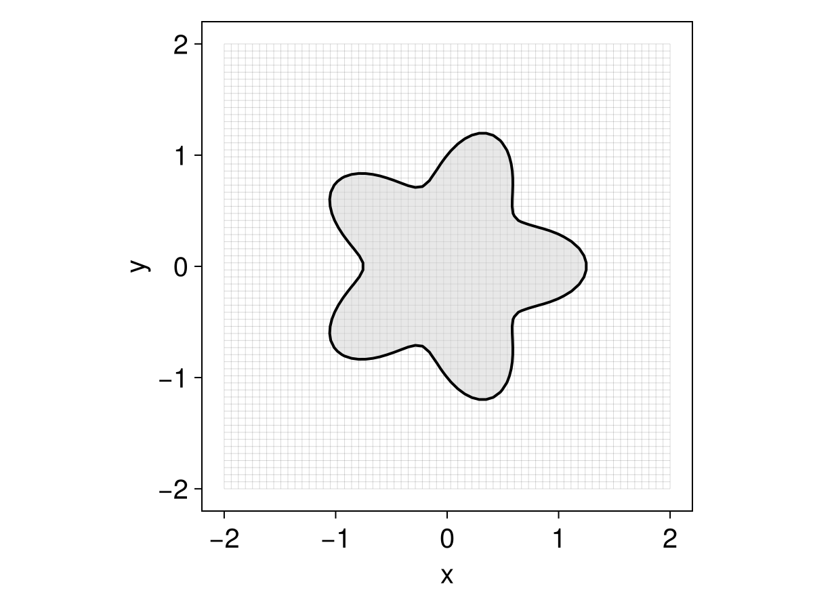
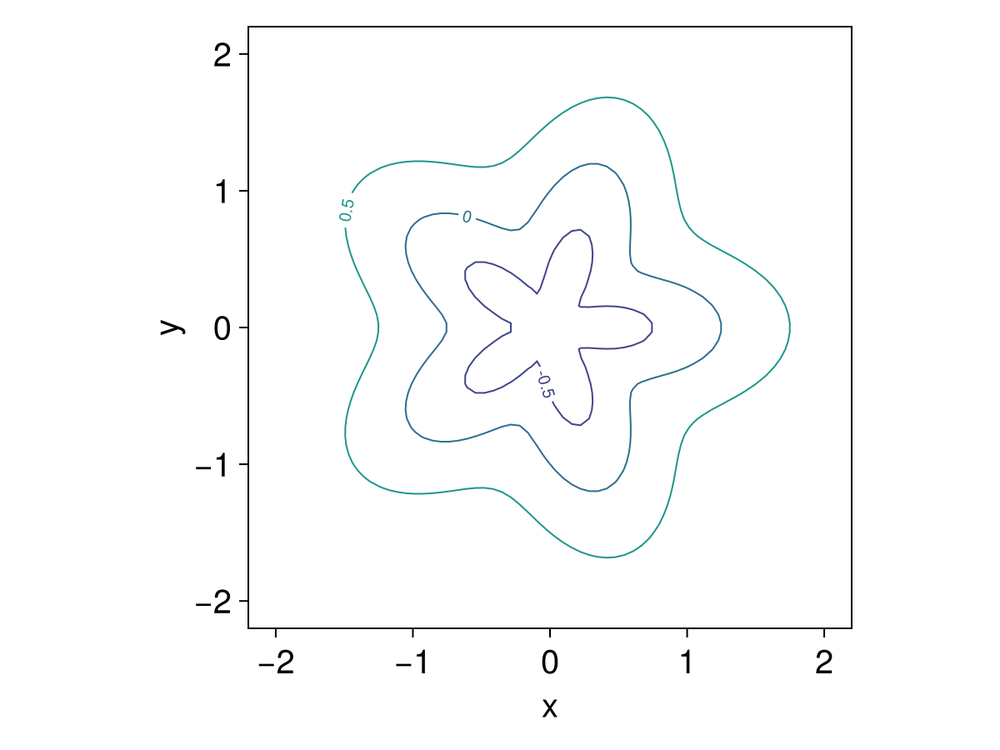
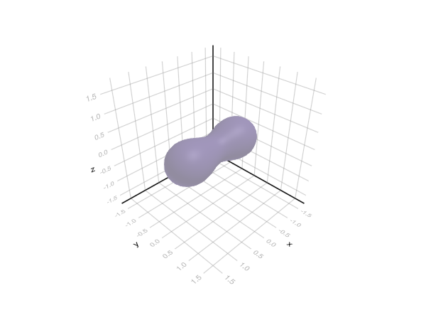
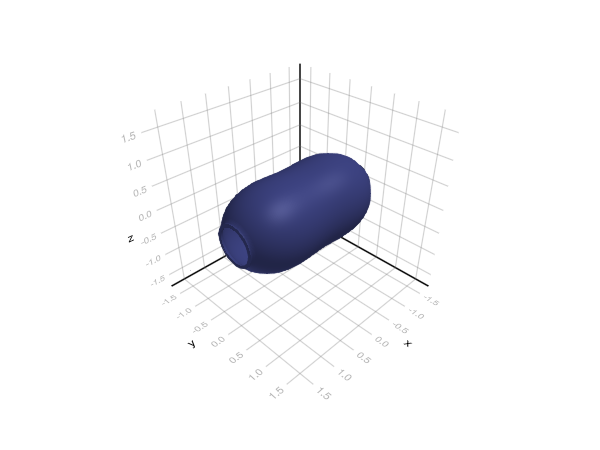

Makie extension
Loading a Makie backend activates plotting recipes for level sets. We recommend GLMakie for 3D plots and animations. Once a backend is loaded you can call plot directly on a MeshField, a NarrowBandMeshField, or a LevelSetEquation.
LevelSetMethods ships a Theme with sensible defaults for these plots; apply it once with LevelSetMethods.set_makie_theme! (or fetch it with LevelSetMethods.makie_theme to scope it to a with_theme block).
Two dimensions
By default plot draws the zero contour and shades the interior $\phi < 0$:
using LevelSetMethods, GLMakie
LevelSetMethods.set_makie_theme!()
grid = CartesianGrid((-2, -2), (2, 2), (64, 64))
ϕ = MeshField(grid) do x # a star; see the geometry page
r, θ = hypot(x...), atan(x[2], x[1])
return r - (1 + 0.25 * cos(5θ))
end
plot(ϕ)
For more control, call Makie's contour (or contourf) directly — for example to draw several level sets at once:
contour(ϕ; levels = [-0.5, 0, 0.5], labels = true)
Three dimensions
In 3D, plot renders the zero level set as an isosurface:
using LevelSetMethods, GLMakie, LinearAlgebra
GLMakie.activate!() # only GLMakie can render the volume isosurface
LevelSetMethods.set_makie_theme!()
grid = CartesianGrid((-1.5, -1.5, -1.5), (1.5, 1.5, 1.5), (32, 32, 32))
P1, P2 = (-1, 0, 0), (1, 0, 0)
ϕ = MeshField(x -> norm(x .- P1) * norm(x .- P2) - 1.05^2, grid) # a Cassini surface
plot(ϕ)
As in 2D, dropping down to Makie's volume gives full control — here drawing a different isovalue:
Makie.volume(ϕ; algorithm = :iso, isovalue = 0.5)
Equations and narrow bands
Calling plot on a LevelSetEquation plots its current_state — equivalent to plot(current_state(eq)) — which makes it convenient to animate a simulation by replotting as it advances (see the examples).
The recipe is band-aware: plotting a NarrowBandMeshField (or an equation whose state is one) shades the active cells in 2D and scatters the active nodes in 3D, so you can see the band travel with the interface — the narrow-band page shows this in action.